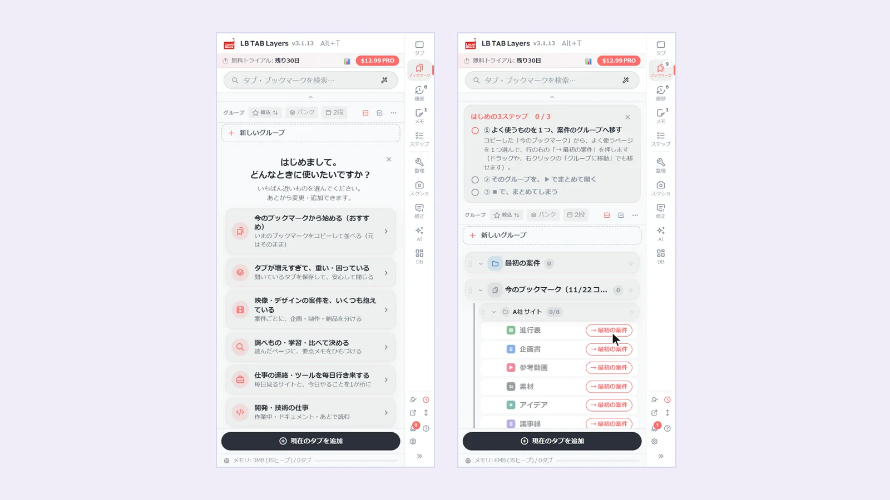

LB TAB Layers 3.1.13 では、入れたその日に外される理由に向き合い、はじめ方を作り直しました。外した方の声でいちばん多かったのは「何のツールか分からない」でした。そこで、入れた直後に今のブックマークをコピーして並べ、そこから「1 つ移す → ▶ で開く → ■ でしまう」を体験してもらう形にしました。元のブックマークは動かさず、片づけの案内は使い慣れたころ（7 日後）まで待ちます。
LB TAB Layers には、外したときに理由を選んでもらうアンケートがあります。答えてくれる方は多くありませんが、読んでいて気づいたことがありました。外した方の多くが、入れたその日か、次の日に外していたのです。
理由でいちばん多かったのは、「何のツールか分からない・分かりにくい・複雑」でした。機能が足りないのではなく、何をすればいいかが分からないまま、外されていました。
空っぽの画面から始めていた
これまでの LB TAB Layers は、入れた直後の画面が空っぽでした。「グループを作って、タブを保存して…」と、ここから自分で育てていく形です。
でも、空っぽの画面からは、この道具の良さが見えません。良さが分かるのは、仕事ごとにまとまったグループを ▶ で一度に開き、■ で一度にしまったときです。その「一瞬で片づく」感覚に、たどり着く前に外されていました。
そこで、入れた直後から、自分のものが並んでいる状態にすることにしました。ほとんどの人は、すでに Chrome にブックマークを持っています。
「移す」のをやめて、「コピーする」
前から、Chrome のブックマークのフォルダを選んで TAB Layers に移す画面はありました。ただ、「移す」と、元の場所（ブックマークバーなど）から見えなくなります。入れたばかりの道具に、いつものブックマークが「消えた」ように見えるのは、不安です。
そこで 3.1.13 では、移すのをやめて、コピーすることにしました。「今のブックマークから始める」を押すと、Chrome のブックマークがコピーされて、サイドパネルに並びます。元のブックマークは、ひとつも動かしません。
- コピーは「今のブックマーク（日付 コピー）」という置き場にまとめる
- 置き場は、無料版のグループの数（5 つまで）に数えない。数に入るのは、自分のグループへ移したものだけ
- 数が多くても、多くは数秒で終わる。途中でやめても、そこまでのコピーは残る
最初の 3 ステップを、自分のブックマークで
コピーのあとは、「はじめの3ステップ」で、1 つ移す → ▶ で開く → ■ でしまう を体験してもらいます。
最初は、移す操作をドラッグにしていました。ところが、自分で触ってみると、行の左の小さなつまみ（⋮⋮）からしかドラッグできず、はじめての人には分かりにくいと気づきました。そこで、置き場の行の右に「→ 最初の案件」というボタンを出し、押すだけで移せるようにしました。このボタンは、1 つ移すと消えます。
コピーしたブックマークが 200 件を超える人には、大きな画面（ダッシュボード）での仕分けもすすめるようにしました。カードからカードへドラッグできるので、数が多いときはそのほうが楽です。
片づけの案内は、7 日待つ
コピーして始めると、Chrome の中には元のブックマークとコピーの両方が残ります。いずれ、元のほうを片づけたくなるはずです。
ただ、入れてすぐに「元のブックマークを片づけますか？」と聞かれたら、不安になります。そこで、コピーしてから 7 日以上たち、そのあと 3 日以上使い、置き場から 10 件以上を仕分けたときに、1 回だけ聞くことにしました。元のブックマークを見なくても困らない、と体で分かったころです。
片づけも、消しません。「その他のブックマーク」の中の 1 つのフォルダへ移すだけで、いつでも元の場所と順番に戻せます。
触って見つけた、小さな引っかかり
作りながら、何度も新しい Chrome で入れ直して、はじめての人のつもりで触りました。そこで見つけて直したものもあります。
- コピーしただけで「ブックマーク 100 個」などのメダルが一度に出ていた → 置き場は数えない
- お祝いの表示が、下の「現在のタブを追加」や知らせに重なり、大事な案内が読めなかった → お祝いは一番下、知らせはその上に
- 大きなフォルダの ▶ を押すと、一度にたくさんのタブが開いて Chrome が重くなる → 20 個より多いときは、開く前に数を確かめる
- 19 言語の画面の言葉を、それぞれの国の Chrome の言い方に合わせた（たとえばオランダ語は「bookmarks」）
これで、外されなくなるのか
正直に言うと、まだ分かりません。3.1.13 を出してから、まだ 1 週間ほどです。もう少し日がたったら、入れたその日に外す方が減ったかを確かめます。
LB TAB Layers は、使えば使うほど良さが分かる道具だと思っています。だからこそ、最初の数分で 1 つだけでも「これは楽だ」と体で分かってもらえるように、これからも、はじめての人のつもりで触って、直していきます。
よくある質問
Q. コピーして始めると、元のブックマークは消えますか？
消えません。元のブックマークは動かさず、そのまま残ります。コピーは Chrome のブックマークの「LB TAB Layers」フォルダの中に、「今のブックマーク（日付 コピー）」としてまとまります。
Q. 前の「フォルダを選んで移す」方法は、もう使えませんか？
使えます。設定の「データ」→「ブックマーク」か、大画面（ダッシュボード）の上の「ブックマークを取り込む」から開けます。
Q. 片づけの案内は、いつ出ますか？
コピーしてから 7 日以上たち、そのあと 3 日以上使い、置き場から 10 件以上を仕分けたときに、1 回だけ出ます。片づけても消さず、いつでも元に戻せます。
▶ 実際の操作を動画で見る
サイドバーで、ブックマークとタブをいっしょに管理する様子です。
今のブックマークから、すぐ始める。
元のブックマークはそのまま、コピーして並べるだけ。アカウント登録なし · 保存先は Chrome のブックマーク · 30日間すべての機能を無料で
Chrome に無料で追加 →